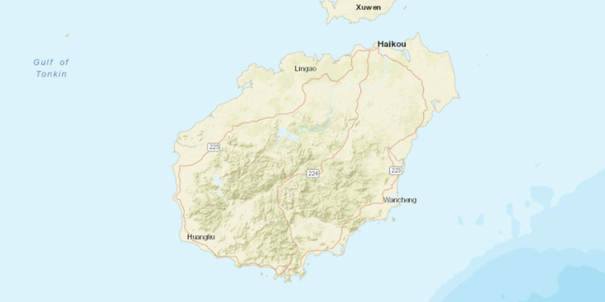
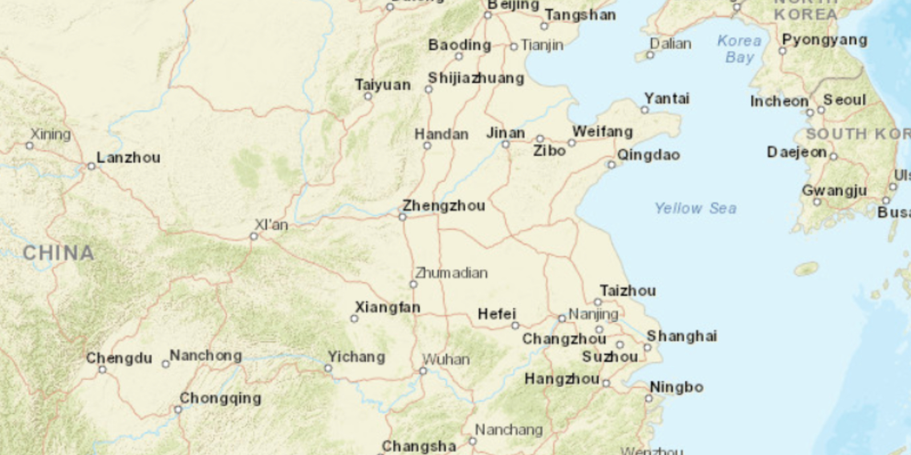
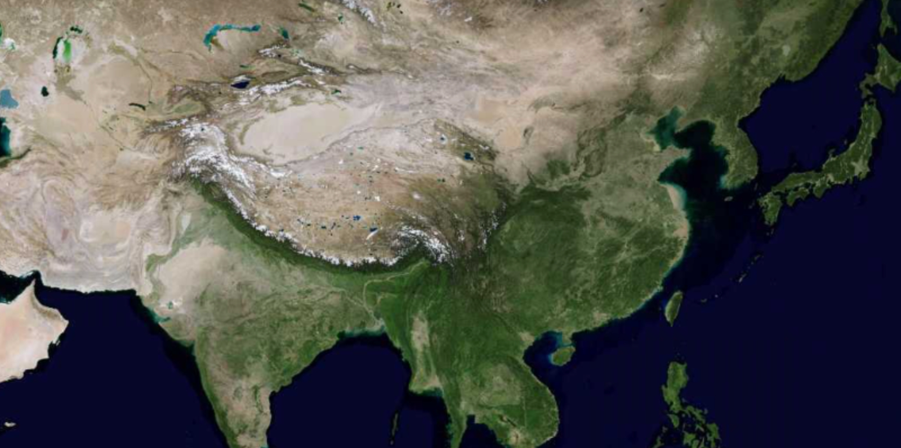
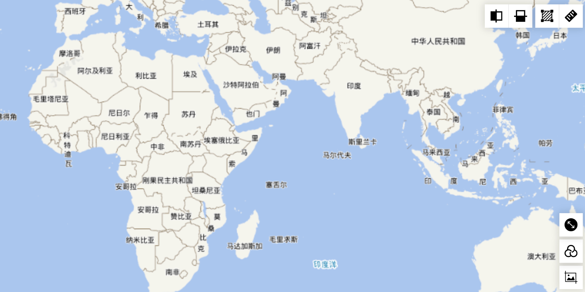
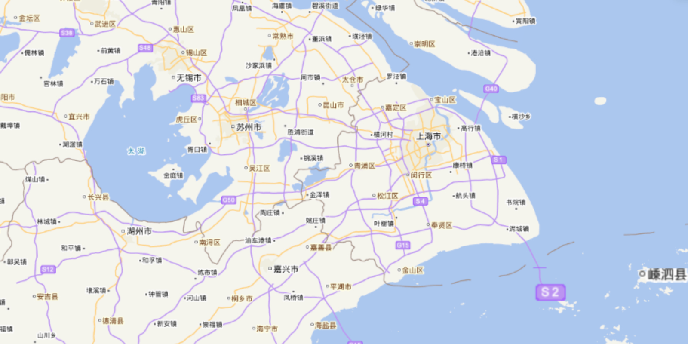
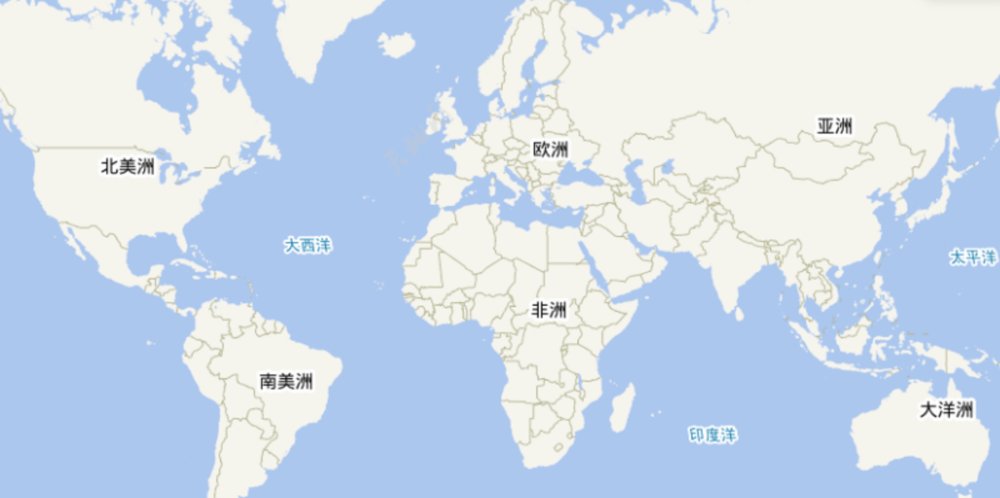
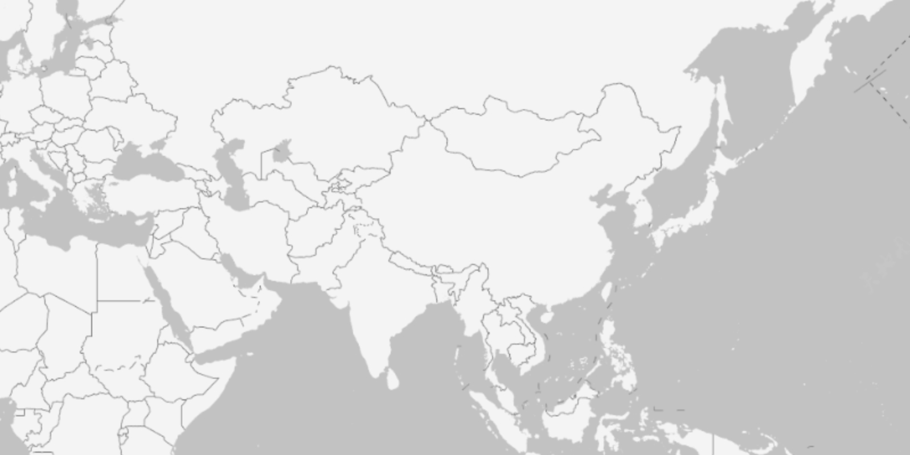
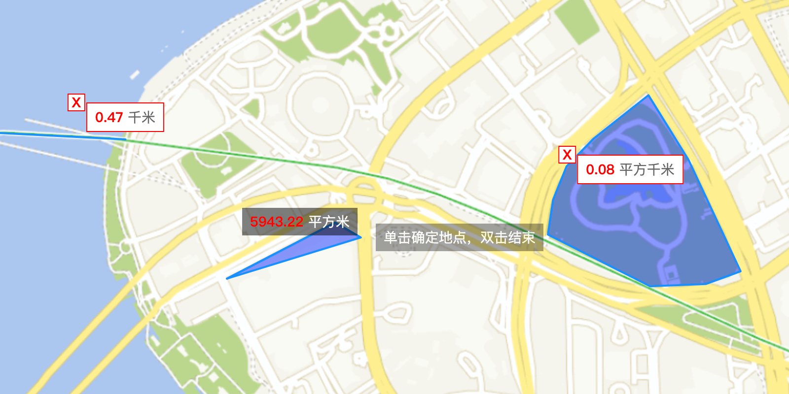
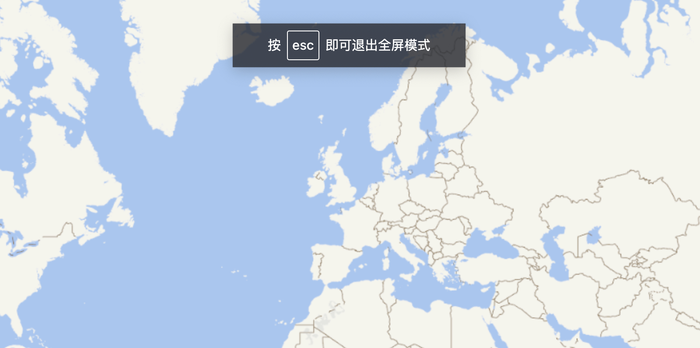
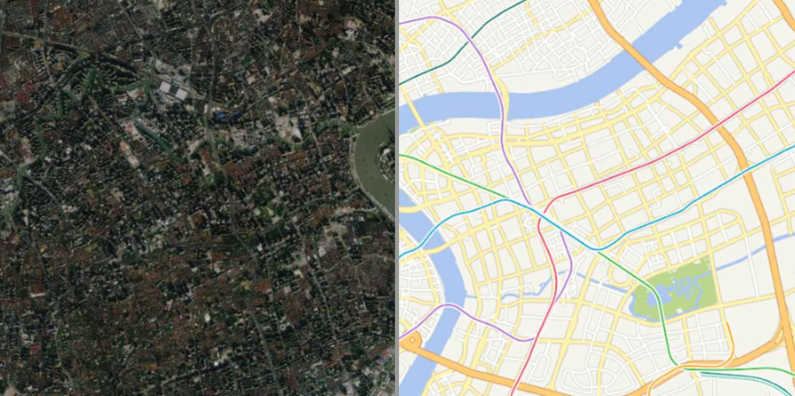

ol-extend-set
首页
指南
API
样例
生态
生态
Openlayers
(opens new window)
插件
ol-ext
(opens new window)
ol3Echarts
(opens new window)
GitHub
(opens new window)
数据源

自定义加载OGC标准服务WMTS

加载OGC标准服务WMTS

加载天地图
使用XYZ方式加载ArcGIS切片
切片加载SuperMap Rest服务
全图加载SuperMap Rest服务
加载ArcGIS矢量切片
加载SuperMap矢量切片
坐标系
自定义坐标系：用4490坐标系加载天地图
地图控件

Control布局

地图缩放

地图全图
地图快照

地图滤镜

地图测量

地图全屏

卷帘对比